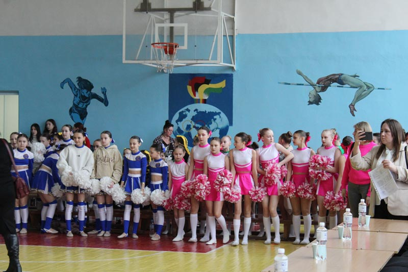

Дві команди з Вчерайшинської ОТГ та жодної з Червоного та Швайківки – в Бердичеві пройшов третій етап змагань з черліденгу
Шкільні всеукраїнські ігри «Пліч-о-пліч», які в минулому році були ініційовані кимось з президентської родини, знову продовжують збирати на свої змагання учасників шкільних команд, їх вчителів і тренерів а також чиновників від освіти та від райадміністрацій.
Колишні члени ОПЗЖ серед депутатів Житомирщини: які посади обіймають сьогодні
Станом на 3 лютого 2025 року в Житомирській обласній та міській радах налічується 14 депутатів, які раніше були членами партії ОПЗЖ. Одна депутатка входить до фракції «За майбутнє», решта — позафракційні. Троє депутатів очолюють комунальні підприємства, один керує ліцеєм, а ще одна депутатка є головою наглядової ради міської лікарні.